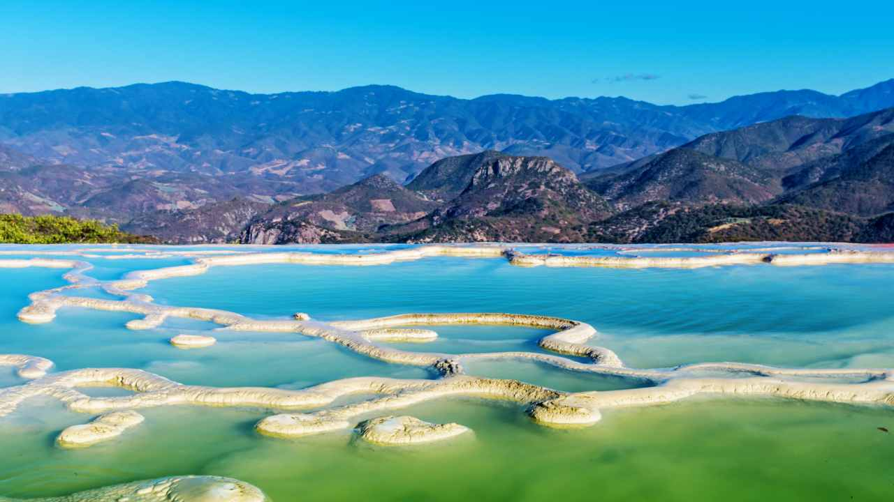
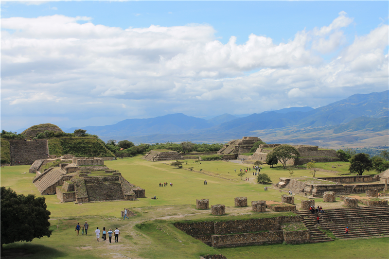

LUGARES TURISTICOS
Oaxaca ofrece una amplia variedad de destinos turísticos para quienes buscan historia, naturaleza o cultura. Algunos de los lugares más importantes son:
-Monte Albán: zona arqueológica zapoteca, declarada Patrimonio de la Humanidad por la UNESCO.
-Mitla: otro sitio arqueológico, famoso por sus grecas talladas en piedra.
-Hierve el Agua: formaciones rocosas que parecen cascadas petrificadas, con pozas naturales de agua templada.
-Oaxaca de Juárez: la capital del estado, conocida por su arquitectura colonial, mercados tradicionales y museos.
 